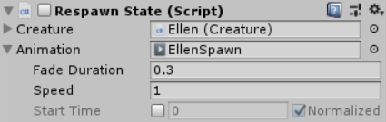

This page is part of the 3D Game Kit example.
When the game starts or after the character dies and is moved back to their last checkpoint, they play a Respawn animation where they stand up from a crouch.

Original
The original character has a Respawn state which plays an animation then transitions to Idle when it's done. Seems simple right?

Unfortunately it's not quite that easy. Several other scripts need to know when the player is respawning (for AI behaviour) and invulnerable (you can't take damage while respawning). So that state actually has a StateMachineBehaviour attached to notify the PlayerController when it is done:
public class EllenSetTargetableSMB : StateMachineBehaviour
{
// OnStateExit is called when a transition ends and the state machine finishes evaluating this state
override public void OnStateExit(Animator animator, AnimatorStateInfo stateInfo, int layerIndex)
{
PlayerController controller = animator.GetComponent<PlayerController>();
if (controller != null)
{
controller.RespawnFinished();
}
}
}
// And in PlayerController.cs:
public void RespawnFinished()
{
m_Respawning = false;
m_Damageable.isInvulnerable = false;
}
This means that the logic for respawning is scattered all over the place:
- You need to check the transition to determine what causes it.
- You need to check if the state has any
StateMachineBehaviours attached (most other states don't) and read theEllenSetTargetableSMBscript to find out what it actually does. Even more so since it has a vaguely misleading name. Something likeOnRespawnFinishedwould have been a much better name. - Then you need to check the
PlayerControllerscript to find out what theRespawnFinishedmethod actually does.
So in the end this approach uses a new script for the Respawn state, but all it does is call a function somewhere else. It tries to use the Animator Controller as a state machine, but the limitations of that system prevent it from doing everything that is needed so the remaining responsibilities fall back onto scripts anyway.
Animancer
The Animancer implementation is much simpler. The Creature has a reference to the Respawn state which it uses as the default when creating the state machine:
[SerializeField] private CreatureState _Respawn;
private void Awake()
{
StateMachine = new StateMachine<CreatureState>(_Respawn);
}
The actual state implementation just plays an animation (using a State Serializable) and returns to Idle when it's done:
using System;
using UnityEngine;
public sealed class RespawnState : CreatureState
{
[SerializeField] private ClipState.Serializable _Animation;
private void OnEnable()
{
Creature.Animancer.Transition(_Animation)
.OnEnd = Creature.ForceEnterIdleState;
}
And prevents any other state from interrupting it (the ForceEnterIdleState above will skip this check):
public override bool CanExitState(CreatureState nextState)
{
return false;
}
}
This gives us a simple component that we can set up in the Inspector:

AI Chasing
Since enemies and AI are outside the scope of this example, the RespawnState script doesn't do anything equivalent to the original PlayerController.RespawnFinished method, but adding such behaviour would be straightforward.
Doing something when the Respawn state is exited would be as simple as adding an OnDisable method.
If an AI script needs to check whether a creature is currently respawning, it can check if (creature.StateMachine.CurrentState is RespawnState). That's a bit too specific though. In this case, the enemies were using it to stop chasing the player while they are respawning but it would be better if the AI didn't specifically depend on the RespawnState class or even particularly care why they aren't allowed to chase the player at that time so it might be better something like this:
// Set the default in the base CreatureState:
public virtual bool CanBeChased { get { return true; } }
// Override it in RespawnState:
public override bool CanBeChased { get { return false; } }
// Now the AI can check that property:
if (creature.StateMachine.CurrentState.CanBeChased)
This would allow the DeathState to also stop enemies from chasing it without any modification to the AI code.
Modularity
Another thing to consider is the effort that would be involved if you wanted to add or remove a particular state when modifying the player or creating a new creature. To make the player just appear immediately without a respawning animation in the original setup you would need to do the following:
- Remove the
Respawningstate from the Animator Controller. - Set
IdleSMas the default state. - Edit the
PlayerControllerscript so it doesn't rely on something else callingRespawnFinished.
But to do the same with Animancer you could basically do the same thing without the last step:
- Remove the
RespawnStatecomponent. - Assign the
IdleStatecomponent to theCreature._Respawnfield in the Inspector (so the same state is assigned to both Respawn and Idle).
We didn't intentionally plan the Animancer setup to support creatures without a respawn animation, but we have the ability to do so anyway since we structured the code properly. Being able to try out ideas and adapt to changing requirements like this is extremely valuable in software development.